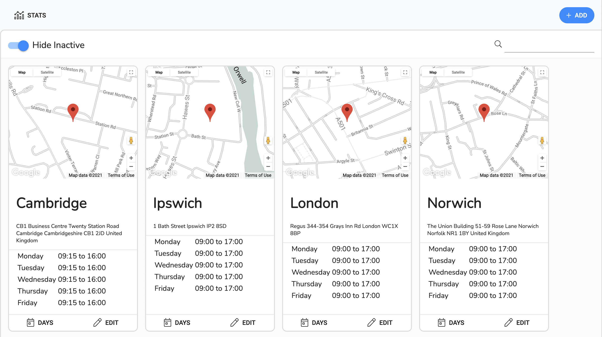
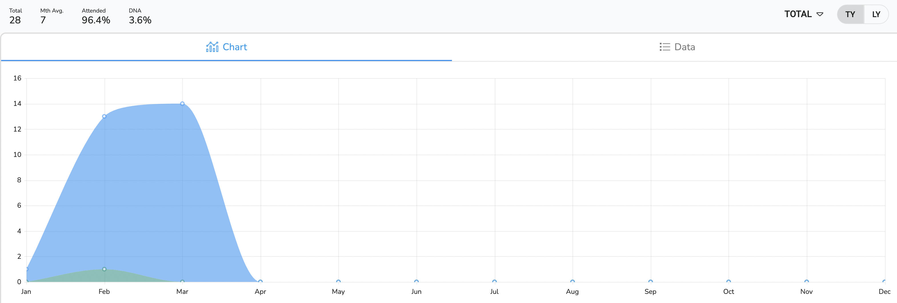

Overview
This section covers the creation and editing of venues. It also covers the creation of clinics which is the combination of a venue, a clinician and a date which is refered to as a clinic day.
The areas we will cover are:
- The venues list, which enables the selection or creation of a venue.
- The venue details, which enables you
- The clinic days, which enables you create/edit a clinic.
List View
The page shows the list of venues in the system. It can be filtered and sorted by using the column headers .
It contains three main sections
- The toolbar for the navigation of the schedular.
- The Filter decide which clinicians appointments/clinics are showing.
- The Venues for viewing and interaction of the appointments.
Toolbar
The toolbar has two buttons:
| Icon | Label | Position | Purpose |
|---|---|---|---|
| Stats | Left | To view venue stats | |
| Add | Right | This opens the add venue page. |
Filters
The filter row has two sections. On the left side is the 'Hide Inactive' switch which hides inactive venues. On the right hand side is the filter and filters by venue name.
Venues
| Number | Label | Description |
|---|---|---|
| 1 | Map | This is a map view of the location of the venue. |
| 2 | Venue Name | The venues name |
| 3 | Address | The venues address |
| 4 | Venue Standard Hours | The venues standard hours |
| 5 | Days | |
| 6 | Edit |
How to..
Add a Venue
- In the Venue List view click the
 Add button
Add button - [Required] Enter the Venue Name.
- Click colour dropdown and choose a colour for the venue.
- The switch defines whether the venue is active or not (.i.e., It available for use in the system - if inactive it won't be visible to use except in the venue list)
- Enter an address for the venue.
- Click on the
 Hours tab to switch to the default
hours for venue. This pre-populates the clinic day entries.
Hours tab to switch to the default
hours for venue. This pre-populates the clinic day entries. - Edit this if required.
- Click on the
 Directory tab to switch to the
default directort for venue.
Directory tab to switch to the
default directort for venue. - Edit this if required.
- Click on the
 Documents tab to switch to the
default documents for venue. The documents here can be used to attach to emails.
Documents tab to switch to the
default documents for venue. The documents here can be used to attach to emails. - Edit this if required.
- Click on the SAVE button when you are ready.
Edit a Venue
- In the Venue List view click the
 Edit button at the bottom of the desired venue card.
Edit button at the bottom of the desired venue card. - See above for fields information.
- Click on the SAVE button when you are ready.
Add a Clinic Day
- In the Venue List view click the
 Days button at the bottom
of the
desired venue card.
Days button at the bottom
of the
desired venue card. - Select the clinician who will run the clinic.
- Click the
Add button. A line will appear with the cursor at the date entry.
- Enter a date. When entered the system will fill in Start Time and end time from the defualts set in the venue page.
- Edit the start and end times if you wish.
- If you wish to add any breaks, then click the under the breaks heading. You will be presented with a start and end time
for the break. Once you have filled them in then click the
 .
. - Once you are happy with the date then click the at the end of the line.
Stats Page
The Venue Stats page contains some overall stats for venues. It has three main areas:
- The Toolbar
- The Tabs
- The display area
The Toolbar
The toolbar is the top most section. It has summary data on th left:
- Appointments - The total number of appointments
- Mth Avg. - The average number of appointments per month.
- Attended - The percentage of attended Appointments
- Attended - The percentage of attended Appointments
On the right hand side is a toggle that switches between TY (This Year) and LY (Last Year)
The Tabs
This switches between a chart breakdown of venues appointments and a data view.
The Display
This is where the views are displayed.